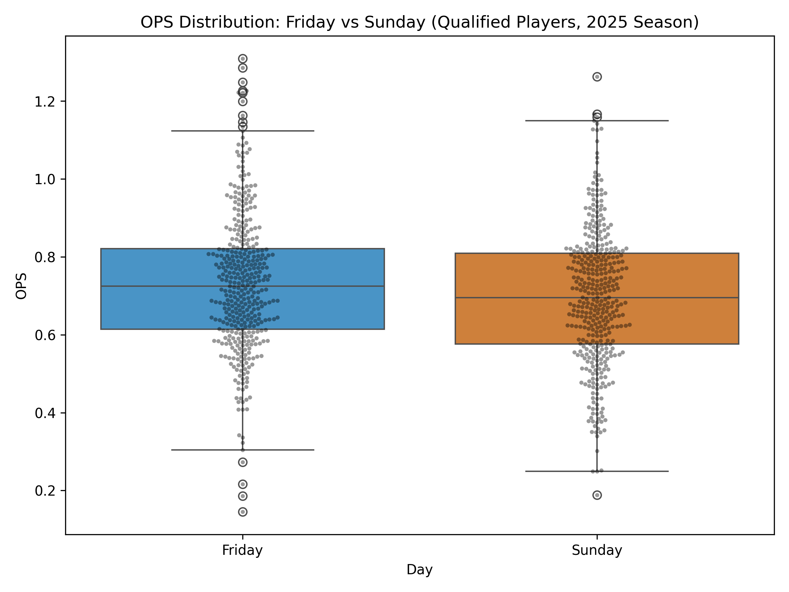
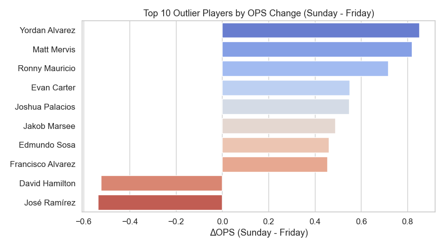
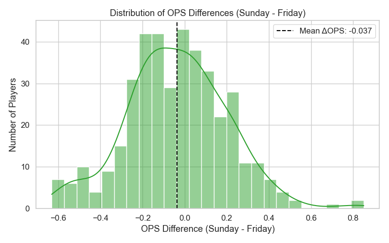
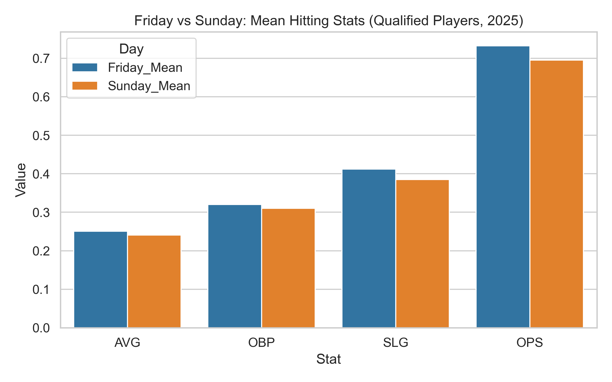

Evaluating OPS distributions and individual player changes between Friday and Sunday contests to determine if rest, recovery, or timing differences influence offensive output.
League-wide distribution split by day to test for systematic shifts in offensive performance.

Players exhibiting the largest OPS deviations by day, providing context for schedule or matchup-driven variance.

Histogram of player-level OPS deltas to determine whether day-based changes are broadly distributed or limited to outliers.

Side-by-side comparison of average key offensive metrics to summarize Friday and Sunday performance differentials.
